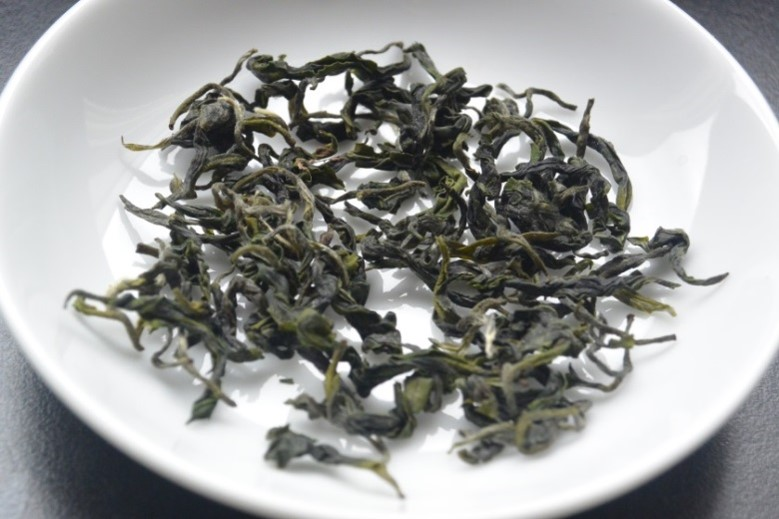
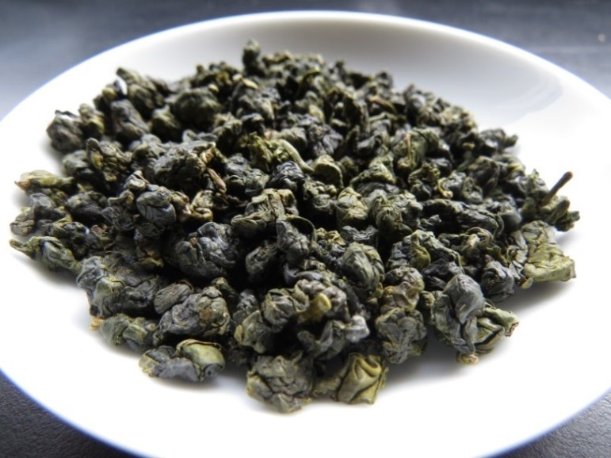
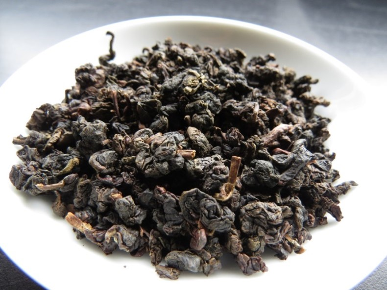
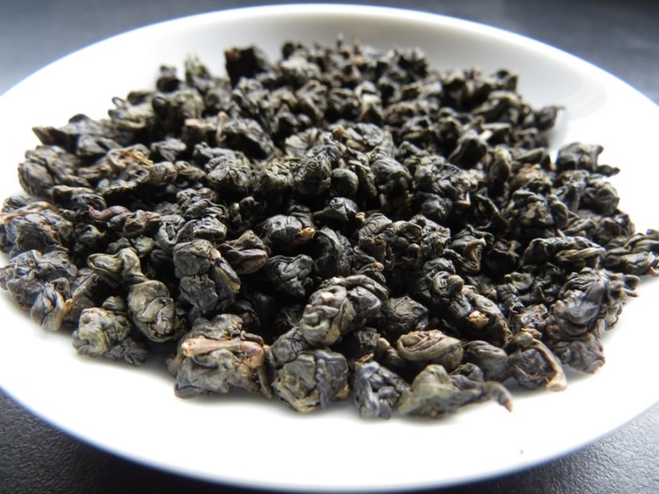

茶葉辨識
茶葉品種 - 紅茶
品質特色：
外觀色澤宜烏黑油潤泛紫光，條型紅茶條鎖緊結勻齊，湯色艷紅，澄清明亮泛油光，以清純濃郁為佳；滋味醇和回甘、濃強鮮爽；葉底肥軟鮮活，紅勻明亮

茶葉品種 - 綠茶(三峽碧螺春)
品質特色：
因茶葉滿身披毫，銀綠隱翠，捲曲成螺而著稱，顏色濃綠、香氣凜冽、滋味甘醇、形狀優美

茶葉品種 - 清香型烏龍茶
品質特色：
色澤翠綠鮮活，滋味甘醇滑軟厚重帶活性，香氣淡雅，水色蜜綠顯黃，耐沖泡

茶葉品種 - 鐵觀音
品質特色：
水色橙黃顯紅，味濃而醇厚，微澀中帶甘潤，並有純和的弱果酸味，以鐵觀音品種製造者為上品(俗稱正欉鐵觀音)
茶葉品種 - 文山包種茶
品質特色：
外觀條索彎曲，色澤鮮豔墨綠，水色蜜綠或蜜黃明亮，香氣清香幽雅似花香，滋味甘醇滑潤帶活性。重香氣，香氣越濃郁品質越高級
茶葉品種 - 白毫烏龍茶
品質特色：
外觀艷麗，白、綠、黃、紅、褐相間如朵花，高級者帶白毫，茶湯水色呈橙紅色，滋味濃醇甘潤帶天然的蜜香或熟果香

茶葉品種 - 凍頂烏龍茶
品質特色：
以凍頂烏龍茶最有名，外觀緊結，色澤墨綠，水色金黃亮麗，香氣濃郁，滋味醇厚甘韻足，香氣與滋味並重